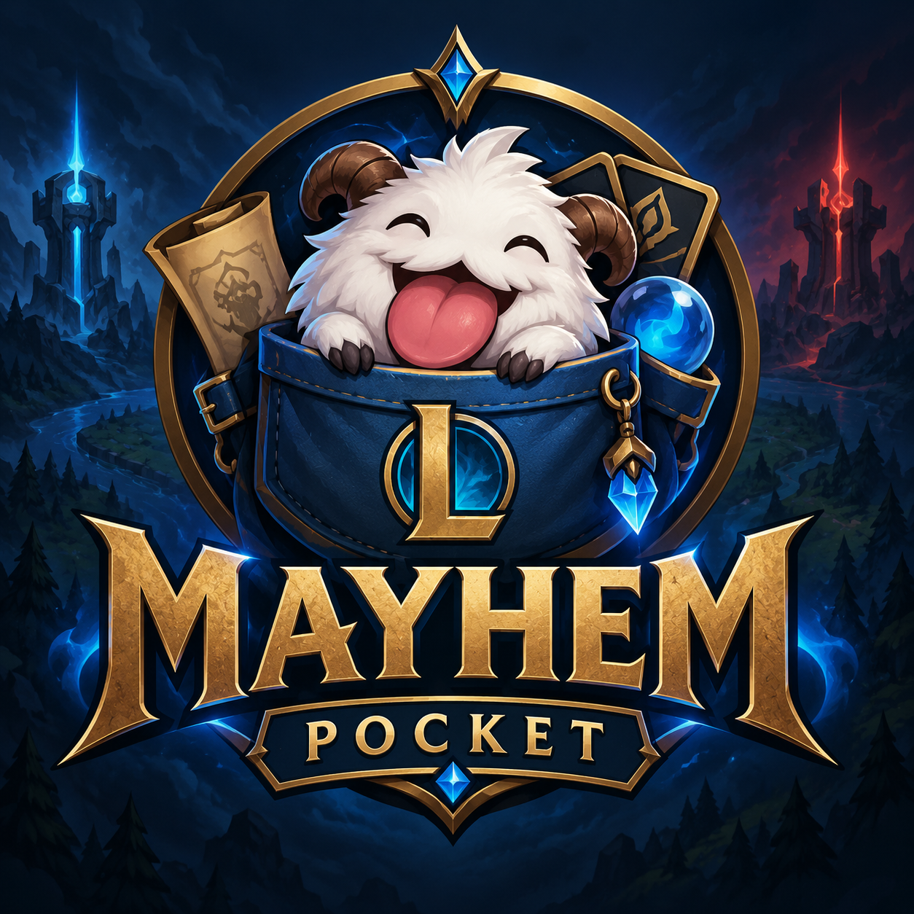

APPLE SILICON
Mayhem Pocket for Mac
For Macs with Apple silicon (M1, M2, M3, M4 and newer).
Version 1.4 · macOS

Mayhem PocketARAM MAYHEM, WITHOUT THE CLUTTER
Current OP.GG recommendations in a fast, compact desktop app—with no ads and no unnecessary tabs.
ABOUT
Mayhem Pocket is a free, fast, and easy-to-use app that gives you OP.GG build recommendations without the lag, clutter, or ads. Quickly find the information you need and get back into the game.
DOWNLOAD
Both versions use the same Mayhem Pocket icon and load current recommendations from OP.GG.
APPLE SILICON
For Macs with Apple silicon (M1, M2, M3, M4 and newer).
Version 1.4 · macOS
64-BIT
A portable build for Windows 10 and Windows 11.
Windows x64 · Keep the folder together
Downloads are hosted securely on GitHub Releases.
INSTALLATION
SUPPORT THE PROJECT
The app is free. If it saves you time, you can help support future updates.